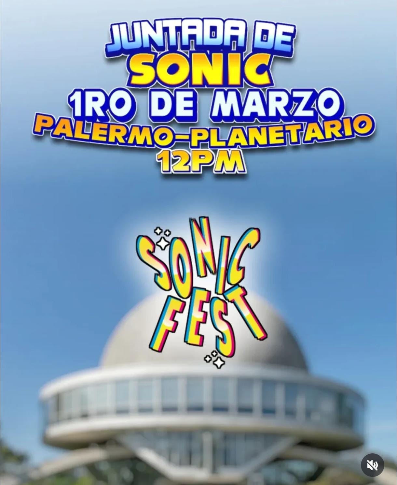

INSTAGRAM SONIC FEST
NUESTRO GRUPO VIRTUAL PARA CONOCER SONIQUER@S PARA ARMAR GRUPOS, HACER PREVIAS, SUBIR TU ARTE, CHATS, LLAMADAS Y MÁS
INSTAGRAM SONIC FEST
NUESTRO GRUPO VIRTUAL PARA CONOCER SONIQUER@S PARA ARMAR GRUPOS, HACER PREVIAS, SUBIR TU ARTE, CHATS, LLAMADAS Y MÁS
 DISCORD SONIC FEST
DISCORD SONIC FEST
FIESTAS DE SONIC EN ARGENTINA +18, Y JUNTADAS Y CONVENCIONES DE SONIC PARA TODAS LAS EDADES. SOMOS EL PUNTO DE ENCUENTRO PARA FANS DE SONIC EN ARGENTINA
☀️🧺SIGUIENTE! JUNTADA DE SONIC PLANETARIO / PALERMO 01/03/2026☀️🧺
🎟️FOTOS DE LA SONIC FEST 24/01/2026 PRIMERA DEL AÑO 2026🎟️ 🎟️FOTOS DE LA SONIC FEST 23/11/2025 EN EL UNICLUB - RIDERS PARTY🎟️
🎟️FOTOS DE LA SONIC FEST 23/11/2025 EN EL UNICLUB - RIDERS PARTY🎟️
 INSTAGRAM SONIC FEST
NUESTRO GRUPO VIRTUAL PARA CONOCER SONIQUER@S PARA ARMAR GRUPOS, HACER PREVIAS, SUBIR TU ARTE, CHATS, LLAMADAS Y MÁS
DISCORD SONIC FEST
INSTAGRAM SONIC FEST
NUESTRO GRUPO VIRTUAL PARA CONOCER SONIQUER@S PARA ARMAR GRUPOS, HACER PREVIAS, SUBIR TU ARTE, CHATS, LLAMADAS Y MÁS
DISCORD SONIC FEST
👉 ¿QUÉ ES LA SONIC FEST?
👉 ¿QUIÉNES SON LOS BADNIKS?
👉 ¿QUÉ ES LA SONIC EXPO FEST?
SÍ, EN TODOS NUESTRAS FIESTAS SIEMPRE HUBO, HAY Y HABRÁ PERSONAL DE SEGURIDAD PARA GARANTIZAR UN AMBIENTE SEGURO, PROVISTO Y SUPERVISADO POR EL ESTABLECIMIENTO DONDE SE REALIZA LA SONIC FEST. HAY CONTROL EN PUERTA Y DENTRO. SI OCURRE ALGÚN PROBLEMA O NOTÁS ALGUIEN SOSPECHOSO O QUE NO DEBERÍA ESTAR, O YA CONTAS CON UNA DENUNCIA A UNA PERSONA QUE ESTÁ PRESENTE, PRESENTALO AL PERSONAL DE SEGURIDAD, QUIENES SON LOS ÚNICOS RESPONSABLES Y AUTORIZADOS PARA INTERVENIR Y, DE SER NECESARIO, RETIRAR A LA PERSONA DEL LUGAR.
ABRIMOS PUERTA A LAS 23:59HS Y LA FIESTA TERMINA A LAS 06:00hs. QUIZÁS NOS TARDEMOS UN POQUITO MÁS QUE DE LAS 00:30HS. ESTATE DESDE LAS 23:59HS PARA TENER TU PIN DE REGALO! LOS PRIMEROS 100 LO TIENEN.
SÍ PERO SALE UN 50% MÁS, CONSEGUILA ANTICIPADA EN EL BOTÓN COMPRAR ENTRADA MÁS ARRIBA
SÍ! SALÍ ANTES DE TU CASA Y HACÉ LA PREVIA EN EL SHOPPING ABASTO, A UNA CUADRA DEL SALÓN. CUANDO LA FIESTA TERMINE ALREDEDOR DE LAS 05:00 HS, QUEDATE CON EL MISMO GRUPO PARA IR A HACER TIEMPO EN EL AFTER EN UN MCDONALDS HASTA QUE SE HABILITEN LOS TRANSPORTES. CONOCÉ Y COORDINÁ CON LOS ASISTENTES UNIÉNDOTE A NUESTRO DISCORD MÁS ARRIBA. LA PREVIA NO ES OFICIAL. ES ORGANIZADA POR LOS ASISTENTES.
SÍ, TENEMOS. PODÉS GUARDAR TU MOCHILA O TU CAMPERA. LLEVÁ EFECTIVO PARA PAGARLO.
TENÉS QUE TENER EL DNI Y SER MAYOR DE 18 AÑOS. SI NO TENÉS EL DNI, SIRVE EL DNI DIGITAL ÚNICAMENTE DESDE LA APP MI ARGENTINA. SI VENÍS DE OTRO PAÍS, EL PASAPORTE O DOCUMENTO DE IDENTIDAD EQUIVALENTE SIRVE. SI NO SOS MAYOR DE 18 AÑOS, VENÍ A LA SONIC EXPO FEST. HACÉ CLICK ACÁ:
POR SUPUESTO! LOS COSPLAYERS SON BIENVENIDOS. TAMBIÉN PODES VENIR CON TU ACCESORIO! TRAÉ TU PELUCHE, EXTREME GEAR CASERA, O UNA ESPADA EXCALIBUR IMPRESA EN 3D. NO PUEDE SER OBJETO PUNZANTE O HERRAMIENTAS PELIGROSAS. PODÉS VESTIRTE COMO QUIERAS. COPATE Y TRAE TU COSPLAY O REMERA DE SONIC!
NO. EN EL CONTROL DE MOCHILAS SE RETIRAN COMIDAS, BEBIDAS O CUBIERTOS. DENTRO DEL EVENTO HAY OPCIONES GASTRONÓMICAS.
NO SE SUSPENDE POR CONDICIONES CLIMÁTICAS. ES EN UN SALÓN, NO AL AIRE LIBRE.